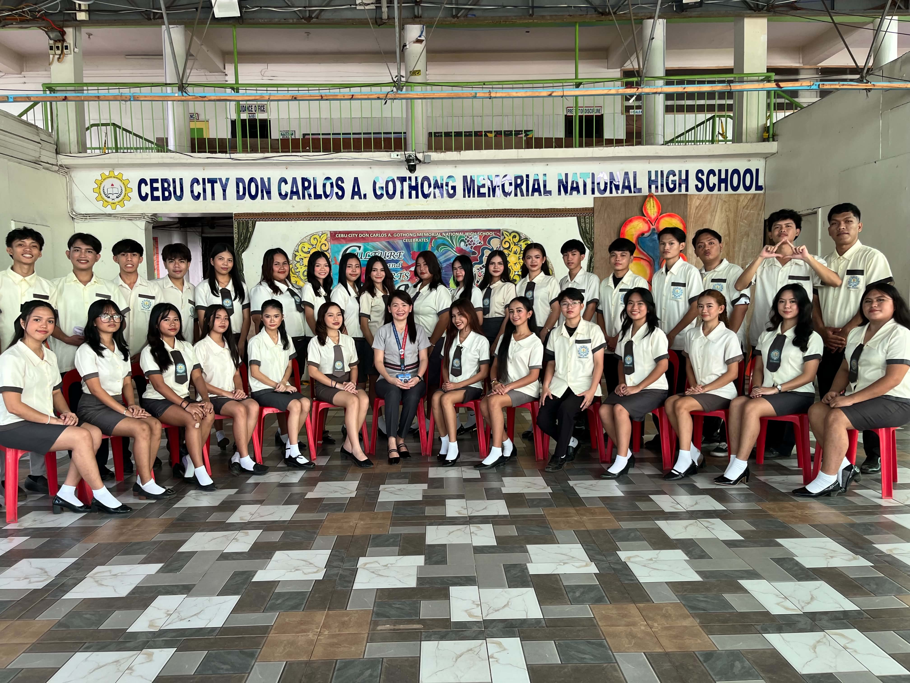

Senior High School was an unforgettable journey filled with learning, friendship, and memorable events. It was a time when I experienced both challenges and happy moments that helped me grow as a person. I met people who became an important part of my life and created memories that I will always cherish. There were times when things were difficult, but those experiences taught me to be stronger, patient, and more responsible. Senior High School also helped me discover more about myself, my strengths, and the things I still need to improve. The lessons I learned were not only from the classroom but also from the experiences and people around me. Looking back, I am grateful for every moment, whether it was good or challenging, because each one contributed to the person I am today. It shaped who I am and prepared me for future endeavors as I continue to face new challenges and opportunities.

Senior High School was a transformative period in my life where I grew academically and personally. It taught me important lessons that went beyond what I learned inside the classroom. I became more responsible, independent, and confident in facing different challenges. I also met people who made my journey more meaningful and created memories that I will always treasure. The experiences I had during Senior High School helped shape the person I am today and prepared me for the next chapter of my life.
Grade 11 was full of new experiences, making new friends, and adjusting to specialized subjects. At first, it was challenging to get used to the new environment, workload, and responsibilities. However, as time passed, I slowly became more comfortable and learned how to manage my time and handle different challenges. I also met new people who made my school life more enjoyable and memorable. Overall, Grade 11 helped me become more confident, responsible, and prepared for the challenges ahead.
In Grade 12, I focused on completing research projects, leading group presentations, and preparing for college entrance exams. The workload became more challenging, but it taught me how to manage my time and stay focused on my goals. Working with my classmates also helped me improve my communication, teamwork, and leadership skills. There were stressful moments, but overcoming them made me more confident in my abilities. Grade 12 became an important stage in my life because it prepared me not only for college but also for the responsibilities and challenges of the future.

Graduation was the proudest moment where all hard work paid off surrounded by family and teachers.